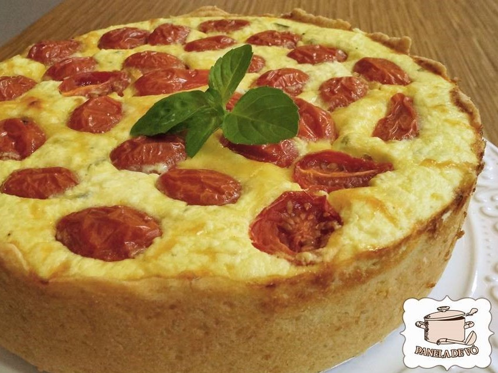

Home

Receita de Ricota com Tomatinhos
“Quiche” vem da palavra “kuchen” que em alemão quer dizer “torta”. Você pode chamá-la do jeito que quiser essa
“Kuchen Torta Quiche de Ricota com Tomatinhos Cerejas”, pois é deliciosa com qualquer nome que você escolher.
Além do recheio delicioso e super light, a massa é super macia…sempre faço as “quiches” com essa receita que nunca
dá errado. Não coloquei nadinha de creme de leite, pois substituí por iogurte natural. Dessa forma diminui um pouco
as calorias que uma torta deliciosa contém sem perder nadinha de sabor. Pode ser feita numa forma grande de 20 cm de
diâmetro com 7 cm de altura, ou em forminhas individuais próprias para quiche. Essa receita vai especialmente para meus
filhos, nora e genro que estão pilotando o fogão de suas casinhas. Podem me chamar que vou a√≠ comer‚Ķ üôÇ
Ingredienets da Massa
- - 02 xícaras de farinha de trigo
- - 140 gramas de manteiga sem sal gelada
- - 02 colheres de sopa de queijo ralado
- - 01 colher de café de fermento em pó
- - 01 colher de chá de sal
- - Fazer uma farofa com as mãos com estes ingredientes. Acrescentar:
- - 01 colher de sopa de iogurte natural
- - 01 ovo inteiro
- - Mexer até desgrudar das mãos. Embrulhar em plástico filme e levar à geladeira enquanto prepara o recheio.
Recheio de cebolas
- - 02 cebolas cortadas em rodelas
- - 02 colheres de sopa de azeite
- - Refogar a cebola no azeite até ficarem douradas. Reservar.
Recheio da Ricota
- 2 xícaras de chá de ricota fresca amassada
- 1/2 xícara de chá de parmesão ralado
- 200 ml de iogurte natural (pode ser o desnatado também)
- 3 ovos
- 1/2 xícara de cebolinha ou manjericão picados
- Sal, pimenta, noz moscada à gosto
- 2 colheres de azeite
- Tomatinhos cerejas
- Temperar a ricota amassada com sal, pimenta, noz moscada, parmesão, cebolinha, manjericão e azeite. Bater à mão os
ovos com o iogurte e adicionar na ricota amassada e temperada, mexendo bem até tudo estar incorporado. A ricota ainda
fica com uns grumos, sem problema. Reservar.
Montagem da Torta
- Abrir a massa com um rolo e forrar o fundo e lateral de uma forma com 20 a 25 cm de diâmetro por 7 cm de altura, ou duas formas básicas de quiche (daquela baixinha) de 20 cm de diâmetro.
- Depois de forrada, esparrame mostarda de Dijon no fundo e lateral da massa (opcional).
- Coloque e espalhe as cebolas refogadas.
- Coloque e espalhe o recheio de ricota.
- Rale queijo parmesão por cima.
- Corte os tomates cerejas ao meio e coloque por cima do recheio.
- Leve ao forno pré aquecido a 180° C por aproximadamente 1 hora.